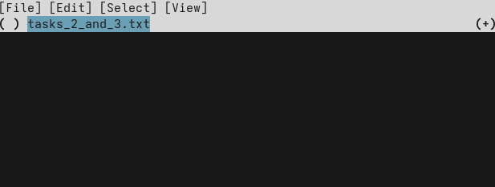
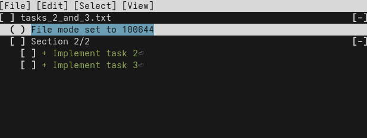
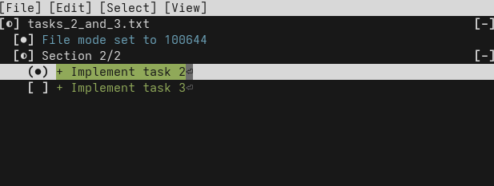

Split a messy working copy
Reset your progress
Reset your progress
To reset your progress to the start of this chapter, run the following command:
curl https://jj-for-everyone.github.io/reset.sh | bash -s commit_interactive
cd ~/jj-tutorial/repo
Recall the basic workflow we learned at the very beginning:
- make some changes
- create a new commit
...repeat. This is fine, but Alice is unfortunately a little forgetful. (Aren't we all?) Every once in a while, Alice makes a bunch of changes that are unrelated to each other, while forgetting to create a new commit in between. Let's see how that could look like.
Assume Alice needs to complete three tasks. Task 1 is implemented in its own file, while tasks 2 and 3 are implemented in the same file:
echo "Implement task 1" > task_1.txt
echo "Implement task 2" > tasks_2_and_3.txt
echo "Implement task 3" >> tasks_2_and_3.txt
Commit ID: 84ea100fcd1065a3edbdf1bc0dda2dc9446b147e Change ID: pnwmqvrumpqkovqowswpxpuqnuospkxo Author : Alice <alice@local> (2025-11-06 15:37:35) Committer: Alice <alice@local> (2025-11-06 15:37:35) (no description set) Added regular file task_1.txt: 1: Implement task 1 Added regular file tasks_2_and_3.txt: 1: Implement task 2 2: Implement task 3
Alice could make a commit with the description "Implement tasks 1, 2 and 3". That would be fine in most situations. But sometimes, especially if these tasks are complex and require a lot of changes, it can be a mess. Putting them all in the same commit makes it harder to understand how the project evolved later on, both by Alice herself and other people like Bob. Lastly, if Alice makes a mistake while implementing, say, task 2, it is more difficult to revert the mistake without also losing the improvements made by tasks 1 and 3.
If Alice wants to have those tasks in separate commits, how can she do that?
Committing only certain files
The first option we'll look at is commit only certain files of the working copy.
This works for task 1, which is isolated to its own file.
To achieve this, you just pass the names of the files to commit as arguments to jj commit:
jj commit --message "Implement task 1" task_1.txt
Let's inspect the commit produced by this command with jj show @-:
Commit ID: 728297d2218d393b98f88638697f19c75a88a906 Change ID: pnwmqvrumpqkovqowswpxpuqnuospkxo Author : Alice <alice@local> (2025-11-06 15:37:35) Committer: Alice <alice@local> (2025-11-06 15:47:11) Implement task 1 Added regular file task_1.txt: 1: Implement task 1
Splendid!
And what does our current working copy commit look like?
Let's check with jj show:
Commit ID: a0631dec487f5146078574ec6341ee64703839b8 Change ID: nqzqoxtywllzlltmzmyvovqrmolwotzy Author : Alice <alice@local> (2025-11-06 15:47:11) Committer: Alice <alice@local> (2025-11-06 15:47:11) (no description set) Added regular file tasks_2_and_3.txt: 1: Implement task 2 2: Implement task 3
As expected, the file for task 1 is not changed in our working copy anymore. The file for tasks 2 and 3 remain unchanged. In order to split a single file over multiple commits, we need something more powerful.
Committing only parts of a file
The command jj commit has a flag --interactive.
If you use it, Jujutsu will open a "terminal user interface" (TUI).
It takes over your terminal to display a simple, text-based, graphical application.
The way it works it not 100% intuitive for every user, so let's take it slow.
Run the command:
jj commit --interactive
You should see something like this:

Let check out the menu bar first.
Even though it's in the terminal, you can click on it!
If you click on [File], a drop-down menu with the options [Confirm] and [Quit] will open.
It also shows the corresponding keyboard shortcuts: c and q.
You can explore the other menus yourself, if you like.
The changes in your working copy are below the menu bar. For now, we can only see the name of the file we changed. Hit the right arrow to "enter" the file, showing its content. It should look something like this:

Indentation indicates a level of hierarchy: Files are at the top, next are "sections", i.e. consecutive changed lines, and lastly the individual lines.
Now we can select the lines we want to commit first. In this case, it's the line of task 2. Navigate to that line with the arrow keys and select it with Space. It should look like this:

Now that we have selected exactly the lines we want to end up in our commit, we can confirm by hitting c (or clicking on "File > Confirm" in the menu bar).
The TUI will close, and your text editor will open for you to enter a commit message.
Enter "Implement task 2", then save & quit.
You can confirm that the file was correctly split over two commits with jj show @- and jj show.
Let's tie up the remaining loose ends by committing task 3 and pushing the three new commits to the remote.
jj commit --message "Implement task 3"
jj bookmark move main --to @-
jj git push
Now you have the skills to get yourself out of most problems that can come up when working with version control. Let's summarize what we've learned:
jj undocan restore previous states of your entire repository step-by-step. Don't worry about making mistakes! Experiment freely andjj undoif anything goes wrong.- If you want to work on a bookmark that only exists on the remote, for example after making a fresh clone of your repo, run
jj bookmark track. - Combining two branches can lead to conflicts if they change the same part of a file. Resolve such conflicts by carefully removing the conflict markers to produce a sensible result.
- If you end up with commits you no longer need for whatever reason, delete them with
jj abandon. - You can restore the content of a file using
jj restore. By default, it restores to the parent of your working copy, but you can specify any commit to restore from with the--fromflag. - If you end up with unrelated changes in your working copy, you can put them in separate commits with
jj commit --interactive.
Now you know pretty much everything you need. You should be productive and rarely get stuck. Some readers will decide not to continue further with the tutorial, which is totally fine.
For those who want more, the next level will teach you how to rewrite history effortlessly. This skill will allow you to produce a much better commit history. Some projects like the Linux kernel or Jujutsu itself require their contributors to master these skills. Without them, contributors cannot meet the project's quality standards.
Aside from that, being able to rewrite history is simply freeing. You'll worry less about how to separate your changes into neat commits and what description to give them, because you can easily change these things later.
Nevertheless, feel free to take a long break before coming back here. You have learned a lot already, and it will be beneficial to have mastered that with practice before continuing.
At this point, you should also start exploring the Jujutsu CLI a little bit on your own.
This tutorial is not a comprehensive reference of everything Jujutsu has to offer.
Would you like to display all commits made by a specific author?
Run jj log --help to find out how.
Would you like to tweak the behavior of Jujutsu in some way?
Maybe the configuration guide can help you out.